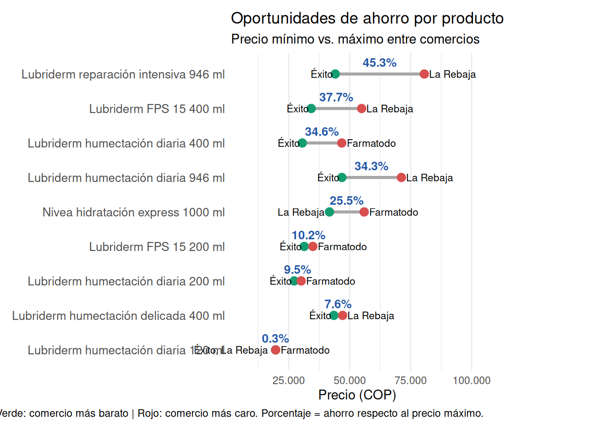
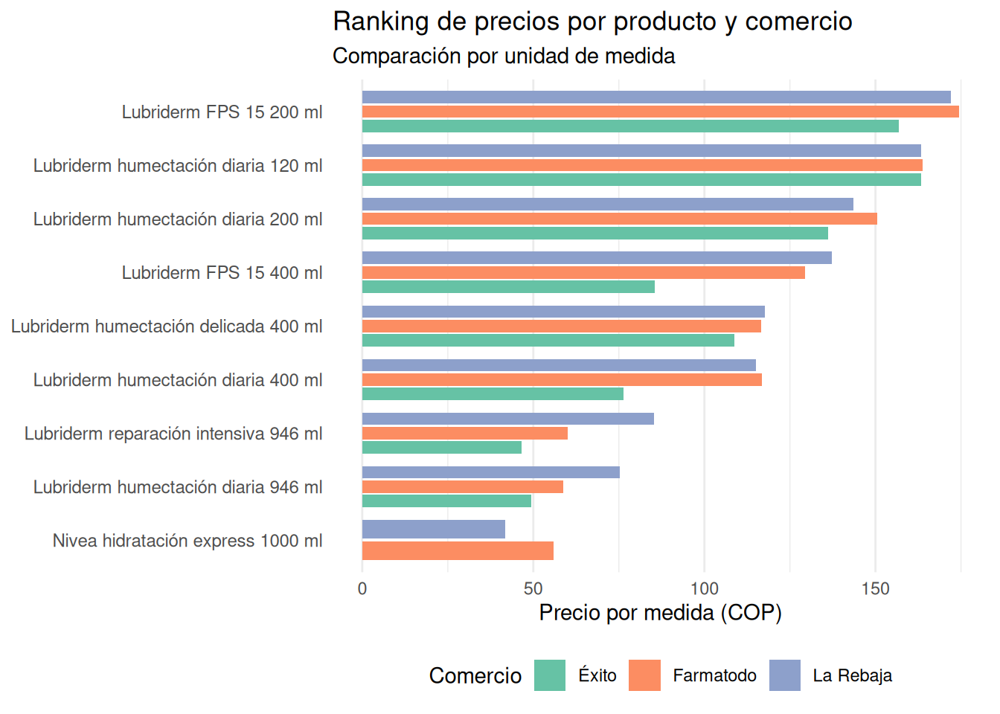
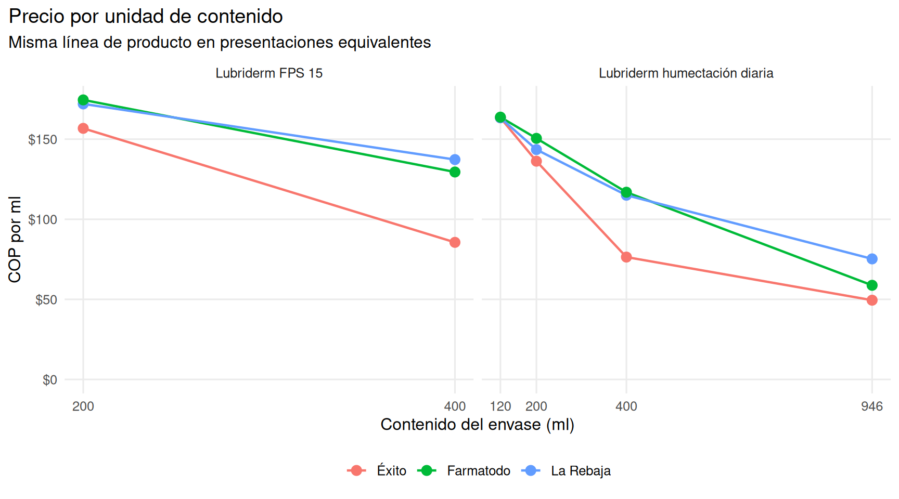
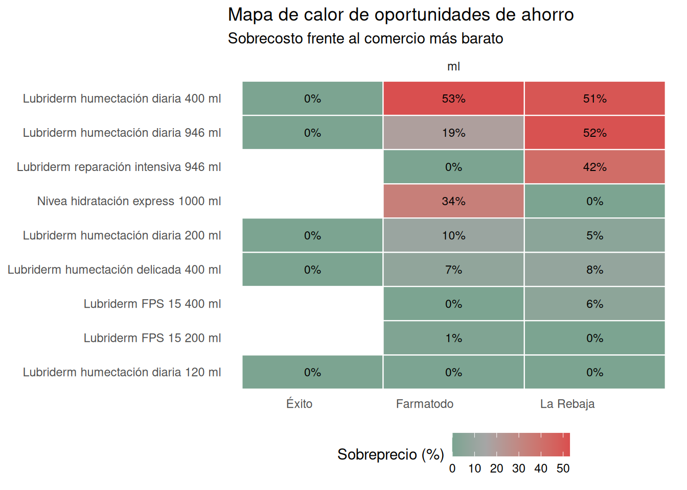
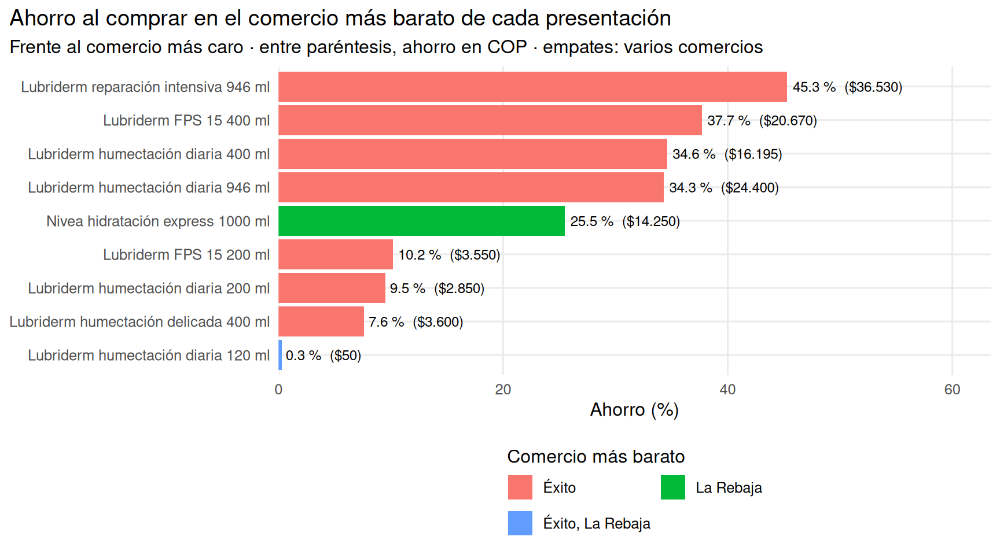

[1] "anuncios" "comercios" "ejecuciones"
[4] "observaciones" "productos" "v_observaciones"
[7] "v_variacion_precio"Comparador de precios
para productos de Cuidado corporal
Por medio del presente se realiza una recoleccion de datos mediante web scraping en comercios y farmacias con venta en línea en Colombia. Este análisis permite identificar dónde resulta más económico comprar algunos productos de esta categoria de artiuclos de cuidado personal. Se presentan tres establecimientos de comercio reconocidos y se encuentra el menor precio por unidad de contenido, en alguna de las presentaciones.
Introducción
categoría: Cuidado corporal
productos seleccionados:
- cremas hidratantes corporales
- aceite corporal
- exfoliante
- productos cosméticos para estrías = producto cosméticos para estría
Nota: Excluye productos específicos para manos, pies y bebés. Aclaracion: se colocan palabras en singular
objetivo de comparación:
Fuentes y documenteacion de especificaciones de cada comercio
se seleccionaron tres comercios con venta en línea en Colombia que ofrecen estos productos de la categoría seleccionada
se detallada la seleccion y caracterizacion de la busqueda por medios de criterios segun lo correspondiente a la estructura de cada pagina y de la distribucion en la pagina web particular de sus productos. Se ordena y especifica segun cada comercio como sigue:
LaRebaja
pagina general: link
organizacion de sus categorías segun busqueda
Busqueda: crema hidrante corporal
pagina: link
filtro de categoria: cuidado corporal
observaciones: se expluye la categoria “corporal” porque trae productos para manos, arrugas y otros fuera de la categoria seleccionada. gel hidratante, si dice solo crema y no corporal se descarta, que no corresponde a la categoria seleccionada.
Busqueda: aceite corporal
pagina principal: link
pagina: link
filtro de categoria: cuidado corporal
observaciones: se descarta la categoria “corporal” porque trae aceite para ducha y pomadas, que se salen de la categoria seleccionada
Busqueda: exfoliante
pagina: link
filtro de categoria: cuidado corporal
observaciones: no se toma en general porque trae productos que se salen de la categoria seleccionada.
Busqueda: estrías
pagina: link
observaciones: se deja sin categoria dado que la estrias se presentan tanto en la parte facial como en la corporal, no hay distincion de clases
Farmatodo
pagina principial: link
organizacion de sus categorías segun busqueda
Busqueda: crema hidrante corporal
pagina: link
filtro de categoria: corporal
pagina: link
filtro de subcategoria: cuidado corporal pero se deben descartar resultados como: - gel hidratante, si dice solo crema y no corporal se descarta, que no corresponde a la categoria seleccionada.
observaciones: se quitan duplicados dado que se hace busquedas separadas y por ende pueden haber coincidencias de busqueda en ambos filtros de busqueda
Busqueda: aceite corporal
considera pertinente es: filtro de categoria: corporal
filtro de subcategoria: cuidado corporal pero se deben descartar resultados como: locion corporal, gel hidratante, crema de sol, que no corresponde a la categoria seleccionada.
se quitan duplicados dado que se hace busquedas separadas y por ende pueden haber coincidencias de busqueda en ambos filtros de busqueda
Busqueda: exfoliante
considera pertinente es: filtro de categoria: corporal y cuidado de la piel y subcategoria: cuidado corporal con ambos filtros encuentra los productos correspondoentes a ambos bien definidos
Busqueda: : estrías
considera pertinente es: filtro de categoria: corporal
filtro de subcategoria: cuidado corporal pero se deben descartar resultados como: locion corporal, gel hidratante, crema de sol, que no corresponde a la categoria seleccionada.
filtro de subcategoria: aceites corporales pero se deben descartar resultados como: locion corporal, gel hidratante, crema de sol, que no corresponde a la categoria seleccionada.
se quitan duplicados dado que se hace busquedas separadas y por ende pueden haber coincidencias de busqueda en ambos filtros de busqueda
EXITO
pagina: link
organizacion de sus categorías segun busqueda
Busqueda: crema hidrante corporal
filtro: - departamento: cuidado corporal - categoria: cuidado corporal - subcategoria: crema de manos y cuerpo
observaciones: dado que este almacen incorpora en estas clasificaciones pero se descartan los productos de manos y lo que no digan corporal, tambien se eliminar productos relacionados con bebes (baby) y que sean para manos.
Busqueda: aceite corporal
pagina: link
filtro: - departamento: cuidado personal - categoria: cuidado corporal - subcategoria: aceites corporales
observaciones: dado que este almacen incorpora en estas clasificaciones pero se descartan los productos de manos y lo que no digan corporal, tambien se eliminar productos relacionados con bebes (baby) y que sean para manos.
Busqueda: exfoliante
pagina: link
filtro: - departamento: cuidado corporal - categoria: cuidado corporal - subcategoria: crema de manos y cuerpo
observaciones: se toman estas categorias porque este almacen tiene en cuenta los productos de cuidado corporal y discrimados que no son maquinas ni instrumentos relacionados con exfoliante. Se dejan unicamente crema y se descartan las que tengan que ver con manos o que no digan corporal.
Busqueda: estrías
pagina:
filtro: - departamento: cuidado corporal - categoria: cuidado corporal - subcategoria: crema de manos y cuerpo y aceites corporales
observaciones: se toman todos con esos filtros. como son productos cosmeticos no se quitan los otros como cremas y aceitas que aparecen, como mantequillas y para masajes para estrias que no aparece en otros almacenes.
Scrapping
La recoleccón de los datos de las paginas principales se recolectan por medio del metodo web-scrapping, un tipo de recoleccion masivo y eficiente de extraccion de datos por medio del software R. Para mayor detalle revisar codigo scraper_general_1.R
Recoleccion completa de los productos de la categoria correspondiente
En cada comercio se extrae todos los productos listados en la categoría, no solo los que se usan para la comparación sino los resultantes de la busqueda de los prodcutos de esta categoria. Esto se hace recorriendo la paginación, el desplazamiento o los filtros necesarios mencionados anteriormente para asegurar la especificacion y la extraccion de los productos que pertenecen a la categoria segun las especificaciones del sitio web de los comercios.
para ello se considera se considera en una sola corrida la extraccion conjunta y en linea de los tres comercios.
despues de la extraccion se hace una validacion del contenido y integridad de los datos extraidos, se corrobora la cantidad de datos pertenencientes a la pagina y los contenidos en las bases de datos construidas.
tambien se detallan algunas consideraciones practicas que se deben tener en cuenta de los datos extraidos y para la transformacion y manipulacion de los datos, despues de una limpieza exhaustiva de los campos y tipos de variable.
Selección de los productos comparables
para encontrar los productos que se van a comparar se realiza la busqueda manual en cada uno de los comercios y se comparan y verifican que los productos presentacion esten presente en los sitios wed de los comercios y se seleccionan los siguientes productos que corresponden a la categoria de productos de cuidado personal. Estos productos provienen de la misma extracción de la categoría y no se hacen búsquedas manuales adicionales.
Productos para comparar:
- LUBRIDERM humectación diaria (200 ml)
- LUBRIDERM humectación diaria (400 ml)
- LUBRIDERM humectación diaria (946 ml)
- LUBRIDERM humectación delicada (400ml)
- LUBRIDERM intensiva reparación (946 ml)
- LUBRIDERM diaria (120 ml)
- LUBRIDERM 15 fps (200 ml)
- LUBRIDERM 15 fps (400 ml)
- NIVEA hidratacion (1000 ml)
a estos ṕroductos identificados se procede a hacer la verificacion en la base de productos de cada comercio y se identifican los productos comparables en la base mediante un indicador de pertenencia al comparativo (columna es_comparable) y un identificador de producto para relacion entre los comercios con los mismos codigos de identificacion dados en la lista anterior (por ejemplo, id_producto = 1, para la crema corporal LUBRIDERM humectación diaria (200 ml) en los tres comercios seleccionados y asi sucesivamente)
la extraccion permite realizar una obtener el ultimo precio registrado en la pagina, de donde se tiene como informacion comun para todos los comercios las URLs, fecha y hora de captura, para dar trazabilidad de los precios y de la posible actualiazcion. Tambien como registro de consulta y de extraccion.
Preparación
el anterior scrapper permite internamiente realizar de manera alterna, una limpieza y normalizacion de los campos y variables recolectadas, por ejemplo, los precios se consideran en unidades de medida de pesos COP y se armonizan las diferentes unidades de medida para los productos encontrados en los tres comercios seleccionados.
Base SQLite
luego procedemos a crear la base SQLite para el tratamiento y consulta de los datos por medio de tablas y vistas desde un formato de datos SQL. En el codigo sqlite_scraper.R se detalla el tratamiento de este tipo de estructura de base de datos, la creacion de tablas y las relaciones necesarias por medio de llaves principales y foraneas que permiten integrar y obtener una base de datos confiable y integra.
despues de tener la base en un sistema de datos SQL, se procede a la creacion de tablas y sus relaciones como integracion de sistema de datos de forma segura y completa.
luego se obtienen las tablas (ya relacionadas) mas relevantes para hacer consultas
[1] "id_observacion" "comercio" "id_producto"
[4] "producto" "linea" "es_comparable"
[7] "sku" "nombre_original" "marca_std"
[10] "subcategoria_std" "medida" "cantidad_unidad"
[13] "unidades" "cantidad_total" "precio_cop"
[16] "precio_lista_cop" "es_promocion" "precio_por_medida"
[19] "fecha_hora_consulta" "codigo_corrida" "estado_ejecucion"
[22] "url_extraccion" "url_producto" "texto_original_anuncio"observamos como estan los datos en la una de las tablas, por ejemplo en las observaciones.
id_observacion comercio id_producto producto
1 1 Éxito 5 Lubriderm reparación intensiva 946 ml
2 2 Éxito NA <NA>
3 3 Éxito 3 Lubriderm humectación diaria 946 ml
4 4 Éxito NA <NA>
5 5 Éxito NA <NA>
6 6 Éxito NA <NA>
linea es_comparable sku
1 Lubriderm reparación intensiva 1 869499
2 <NA> 0 104586664
3 Lubriderm humectación diaria 1 3155353
4 <NA> 0 878339
5 <NA> 0 754586
6 <NA> 0 3244787
nombre_original marca_std
1 Crema corporal LUBRIDERM reparación intensiva (946 gr) LUBRIDERM
2 Hidratante Corporal Cerave Cara Y Cuerpo 562 Ml <NA>
3 Crema corporal LUBRIDERM humectación diaria (946 ml) LUBRIDERM
4 Crema corporal LUBRIDERM protección solar FPS 15 (946 gr) LUBRIDERM
5 Crema corporal LUBRIDERM for men (400 ml) LUBRIDERM
6 Crema corporal NIVEA hidratante (1000 ml) NIVEA
subcategoria_std medida cantidad_unidad unidades cantidad_total precio_cop
1 crema_corporal g 946 1 946 44070
2 crema_corporal ml 562 1 562 134462
3 crema_corporal ml 946 1 946 46800
4 crema_corporal g 946 1 946 49140
5 crema_corporal ml 400 1 400 50300
6 crema_corporal ml 1000 1 1000 49910
precio_lista_cop es_promocion precio_por_medida fecha_hora_consulta
1 67800 1 46.59 2026-10-17T23:01:48-05:00
2 235309 1 239.26 2026-10-17T23:01:48-05:00
3 72000 1 49.47 2026-10-17T23:01:48-05:00
4 81000 1 51.95 2026-10-17T23:01:48-05:00
5 50300 0 125.75 2026-10-17T23:01:48-05:00
6 71300 1 49.91 2026-10-17T23:01:48-05:00
codigo_corrida estado_ejecucion
1 20261017230148 parcial
2 20261017230148 parcial
3 20261017230148 parcial
4 20261017230148 parcial
5 20261017230148 parcial
6 20261017230148 parcial
url_extraccion
1 https://www.exito.com/cr-corporal-reparacion-intensi-869499/p
2 https://www.exito.com/hidratante-corporal-cerave-cara-y-cuerpo-562-ml-104586664-mp/p
3 https://www.exito.com/crema-corporal-humectacion-diaria-lubriderm-946-ml-3155353/p
4 https://www.exito.com/crema-corporal-uv15-878339/p
5 https://www.exito.com/crema-men-fragancia-ligera-754586/p
6 https://www.exito.com/nbody-ess-pmp-rprcrltn-1000ml-nivea-hidratante-1000-ml-3244787/p
url_producto
1 https://www.exito.com/cr-corporal-reparacion-intensi-869499/p
2 https://www.exito.com/hidratante-corporal-cerave-cara-y-cuerpo-562-ml-104586664-mp/p
3 https://www.exito.com/crema-corporal-humectacion-diaria-lubriderm-946-ml-3155353/p
4 https://www.exito.com/crema-corporal-uv15-878339/p
5 https://www.exito.com/crema-men-fragancia-ligera-754586/p
6 https://www.exito.com/nbody-ess-pmp-rprcrltn-1000ml-nivea-hidratante-1000-ml-3244787/p
texto_original_anuncio
1 Crema corporal LUBRIDERM reparación intensiva (946 gr)\n\n(Gr a $ 46,59)\n\n-\n\n35\n\n%\n\n$ 67.800\n\n$ 44.070\n\nVendido por: Exito\n\n4.7(27 opiniones)\n\nVer 1 oferta adicional\n\nAgregar
2 Hidratante Corporal Cerave Cara Y Cuerpo 562 Ml\n\n-\n\n42\n\n%\n\n$ 235.309\n\n$ 134.462\n\nVendido por: Magic marketplace\n\nVer 1 oferta adicional\n\nAgregar
3 Crema corporal LUBRIDERM humectación diaria (946 ml)\n\n(Ml a $ 49,47)\n\n-\n\n35\n\n%\n\n$ 72.000\n\n$ 46.800\n\nVendido por: Exito\n\n5.0(6 opiniones)\n\nAgregar
4 Crema corporal LUBRIDERM protección solar FPS 15 (946 gr)\n\n(Gr a $ 51,95)\n\n-\n\n39\n\n%\n\n$ 81.000\n\n$ 49.140\n\nVendido por: Exito\n\n5.0(2 opiniones)\n\nAgregar
5 Crema corporal LUBRIDERM for men (400 ml)\n\n(Ml a $ 125,75)\n\n$ 50.300\n\nVendido por: Exito\n\n5.0(1 opiniones)\n\nAgregar
6 Crema corporal NIVEA hidratante (1000 ml)\n\n(Ml a $ 49,91)\n\n-\n\n30\n\n%\n\n$ 71.300\n\n$ 49.910\n\nVendido por: Exito\n\nAgregarcolumnas de algunas tablas de interes
[1] "id_comercio" "codigo" "nombre" "sitio_web" [1] "id_anuncio" "id_comercio" "sku"
[4] "id_producto" "nombre_original" "presentacion_original"
[7] "marca_original" "marca_std" "subcategoria_std"
[10] "envase" "medida" "cantidad_unidad"
[13] "unidades" "cantidad_total" "url_producto"
[16] "texto_original" "primera_consulta" "ultima_consulta" [1] "id_ejecucion" "codigo_corrida" "id_comercio"
[4] "fecha_hora_inicio" "n_registros" "estado"
[7] "mensaje" Consultas SQL
Con el proposito de comprender y dar respuesta primordial del documento, se explora y realizan algunas preguntas que permiten saber con claridad los comercios que ofrecen precios más comodos, sus ventajas entre competidores y resultados de analisis de la informacion contenida en la base. Por ejemplo podriamos preguntarnos:
1
¿Cuántos comercios, productos/presentaciones y observaciones contiene la base? ¿Cuántos productos aporta cada comercio?
Numero de productos en general
n_productos n_observaciones
1 226 226Numero de productos en cada comercio
comercio n_productos
1 Farmatodo 119
2 La Rebaja 40
3 Éxito 67Numero de productos dentro de cada comercio y categoria.
comercio subcategoria_std n_productos
1 Farmatodo aceite_corporal 19
2 Farmatodo crema_corporal 66
3 Farmatodo exfoliante_corporal 29
4 Farmatodo otros_corporal 5
5 La Rebaja aceite_corporal 12
6 La Rebaja crema_corporal 24
7 La Rebaja exfoliante_corporal 1
8 La Rebaja otros_corporal 3
9 Éxito aceite_corporal 18
10 Éxito crema_corporal 46
11 Éxito exfoliante_corporal 2
12 Éxito otros_corporal 1interpretacion: hay tres comercios, 264 productos distintos, hay 515 observaciones en total en la base. la cantidad de productos que registra cada comercio es 120 Farmatodo, 77 para LaRabaja y 67 para almacen Exito.
2
En una misma ejecución de recolección, ¿se obtuvieron al menos 24 observaciones comparables (ocho productos por tres comercios)? ¿Hay registros repetidos del mismo producto y comercio en esa ejecución?
[1] "id_observacion" "comercio" "id_producto"
[4] "producto" "linea" "es_comparable"
[7] "sku" "nombre_original" "marca_std"
[10] "subcategoria_std" "medida" "cantidad_unidad"
[13] "unidades" "cantidad_total" "precio_cop"
[16] "precio_lista_cop" "es_promocion" "precio_por_medida"
[19] "fecha_hora_consulta" "codigo_corrida" "estado_ejecucion"
[22] "url_extraccion" "url_producto" "texto_original_anuncio" [1] "id_producto" "nombre" "linea" "marca_std"
[5] "subcategoria_std" "presentacion" "medida" "cantidad_unidad"
[9] "unidades" "cantidad_total" codigo_corrida obs_comparables productos_distintos comercios esperadas
1 20261017230148 26 9 3 27
cumple_24
1 1[1] codigo_corrida comercio id_producto producto veces
<0 rows> (or 0-length row.names) codigo_corrida comercio nombre_original
1 20261017230148 La Rebaja CREMA CORPORAL LUBRIDERM HUMECTACION DIARIA
2 20261017230148 La Rebaja CREMA CORPORAL LUBRIDERM FPS 15
3 20261017230148 La Rebaja CREMA CORPORAL LUBRIDERM REPARACIÓN INTENSIVA
4 20261017230148 La Rebaja ACEITE CORPORAL COCO DROGAM
5 20261017230148 La Rebaja BIO-OIL ACEITE
6 20261017230148 La Rebaja CICATRICURE GEL FACIAL CORPORAL CICATRICES Y ESTRIAS
veces
1 5
2 3
3 3
4 2
5 2
6 2interpretacion: Si, en una misma ejecucion, por ejemplo la ultima, si se obtuvieron al menos 24 observaciones para comparar, en nuestro caso particular se tiene 27 observaciones 9 por cada comercio. No existen repetidos en el sentido que tienen el mismo producto comparable y comercio dentro de una misma ejecución pero si hay registros repetidos por nombre de producto y comercio en esa ejecución en su mayoria del comercio LaRebaja.
3
Para cada presentación comparable, ¿cuáles son el precio mínimo, máximo y promedio? ¿Qué comercio ofrece el menor precio? Incluir los empates.
para este caso se usa la opcion ultima corrida obtenida
esta se toma como referencia. Los productos comparables se muestran a continuacion
id_producto producto n_comercios precio_min
1 1 Lubriderm humectación diaria 200 ml 3 27250
2 2 Lubriderm humectación diaria 400 ml 3 30555
3 3 Lubriderm humectación diaria 946 ml 3 46800
4 4 Lubriderm humectación delicada 400 ml 3 43500
5 5 Lubriderm reparación intensiva 946 ml 3 44070
6 6 Lubriderm humectación diaria 120 ml 3 19600
7 7 Lubriderm FPS 15 200 ml 3 31350
8 8 Lubriderm FPS 15 400 ml 3 34230
9 9 Nivea hidratación express 1000 ml 2 41700
precio_max precio_prom comercio_menor_precio
1 30100 28683 Éxito
2 46750 41102 Éxito
3 71200 57867 Éxito
4 47100 45750 Éxito
5 80600 60490 Éxito
6 19650 19617 Éxito, La Rebaja
7 34900 33550 Éxito
8 54900 46977 Éxito
9 55950 48825 La Rebajainterpretacion: el comercio que ofrece el menor precio en casi en todos los productos es el almacen Exito, a excepción de dos productos, en Lubriderm humectación diaria 120 ml que tiene empate con LaRebaja y el segundo producto es Nivea hidratación express 1000 ml que obtiene un menor precio tambien LaRebaja. Algo que resaltar aqui es que el comercio Farmatodo no participa en ningun producto como de menor precio, es decir, entre estos productos seleccionados de cuidado personal el menos favorable es este.
4
¿Cuál es el ahorro en COP y en porcentaje al elegir la oferta más económica de cada presentación?
id_producto producto precio_min precio_max
1 1 Lubriderm humectación diaria 200 ml 27250 30100
2 2 Lubriderm humectación diaria 400 ml 30555 46750
3 3 Lubriderm humectación diaria 946 ml 46800 71200
4 4 Lubriderm humectación delicada 400 ml 43500 47100
5 5 Lubriderm reparación intensiva 946 ml 44070 80600
6 6 Lubriderm humectación diaria 120 ml 19600 19650
7 7 Lubriderm FPS 15 200 ml 31350 34900
8 8 Lubriderm FPS 15 400 ml 34230 54900
9 9 Nivea hidratación express 1000 ml 41700 55950
ahorro_vs_max_cop ahorro_vs_max_pct ahorro_vs_prom_cop ahorro_vs_prom_pct
1 2850 9.5 1433 5.0
2 16195 34.6 10547 25.7
3 24400 34.3 11067 19.1
4 3600 7.6 2250 4.9
5 36530 45.3 16420 27.1
6 50 0.3 17 0.1
7 3550 10.2 2200 6.6
8 20670 37.7 12747 27.1
9 14250 25.5 7125 14.6interpretacion: el ahorro con respecto al maximo valor de los productos comparables de cada presentacion se muestra en la tabla, siendo el de mayor diferencia frente al maximo, la Lubriderm reparación intensiva 946 ml, con un valor e \(\$36.530\) correspondiente a \(45.3\%\).
5
Si se incluyeron tamaños comparables del mismo producto, ¿qué presentación y comercio tienen el menor precio por mL, g, mg o unidad?
medida producto linea
1 g Lubriderm reparación intensiva 946 ml Lubriderm reparación intensiva
2 g Lubriderm FPS 15 400 ml Lubriderm FPS 15
3 g Lubriderm FPS 15 200 ml Lubriderm FPS 15
4 ml Nivea hidratación express 1000 ml Nivea hidratación express
5 ml Lubriderm humectación diaria 946 ml Lubriderm humectación diaria
6 ml Nivea hidratación express 1000 ml Nivea hidratación express
comercio cantidad_total precio_cop precio_por_medida ranking
1 Éxito 946 44070 46.59 1
2 Éxito 400 34230 85.58 2
3 Éxito 200 31350 156.75 3
4 La Rebaja 1000 41700 41.70 1
5 Éxito 946 46800 49.47 2
6 Farmatodo 1000 55950 55.95 3 medida producto linea
1 g Lubriderm reparación intensiva 946 ml Lubriderm reparación intensiva
4 ml Nivea hidratación express 1000 ml Nivea hidratación express
comercio cantidad_total precio_cop precio_por_medida ranking
1 Éxito 946 44070 46.59 1
4 La Rebaja 1000 41700 41.70 1interpretacion: el comercio que tuvo el menor precio con respecto a la medida en gramos (g) y en presentacion de 946, fue el almacen Exito. Mientras que para la presentacion en militrios (ml) el comercio que tuvo menor precio fue LaRebaja.
6
¿Cuáles son las mayores diferencias de precio entre comercios? Ordenar las presentaciones por ahorro porcentual.
producto precio_min precio_max diferencia_cop
1 Lubriderm reparación intensiva 946 ml 44070 80600 36530
2 Lubriderm FPS 15 400 ml 34230 54900 20670
3 Lubriderm humectación diaria 400 ml 30555 46750 16195
4 Lubriderm humectación diaria 946 ml 46800 71200 24400
5 Nivea hidratación express 1000 ml 41700 55950 14250
6 Lubriderm FPS 15 200 ml 31350 34900 3550
7 Lubriderm humectación diaria 200 ml 27250 30100 2850
8 Lubriderm humectación delicada 400 ml 43500 47100 3600
9 Lubriderm humectación diaria 120 ml 19600 19650 50
ahorro_pct mas_barato mas_caro
1 45.3 Éxito La Rebaja
2 37.7 Éxito La Rebaja
3 34.6 Éxito Farmatodo
4 34.3 Éxito La Rebaja
5 25.5 La Rebaja Farmatodo
6 10.2 Éxito Farmatodo
7 9.5 Éxito Farmatodo
8 7.6 Éxito La Rebaja
9 0.3 Éxito, La Rebaja Farmatodointerpretacion: las mayores diferencias de precio entre comercios en ahorro porcentual alcanzan a superar el cuarenta porciento siendo el comercio mas barato almacen Exito y el mas caro LaRebaja. Se observa que cerca de la mitad de productos seleccionados para la comparacion superan el \(30\%\) del ahorro porcentual, que corresponde a un ahorro en promedio cercano a los 15 mil pesos. Aqui se usaron dos medidas de comparacion de precios
\[ diferencia_{cop} = Pmax − Pmin \]
\[ \text{Ahorro (%)} = 100 \cdot \dfrac{\text{Pmax − Pmin}}{\text{Pmax}} \]
7
¿Qué datos faltantes o inconsistentes afectan la comparación y cuántos son?
problema
1 productos publicados sin marca estandarizada
2 productos publicados sin contenido (ml/g) identificable
3 productos publicados sin presentacion en el anuncio
4 productos publicados sin URL
5 comparables con contenido distinto al del producto comun (posible SKU mal asignado)
6 comparables sin precio en la corrida de referencia (comercio x producto)
7 ejecuciones (comercio) que no quedaron completas
n total
1 35 226
2 25 226
3 46 226
4 0 226
5 0 26
6 1 27
7 1 3 comercio id_producto producto
1 Éxito 9 Nivea hidratación express 1000 mlinterpretacion: los datos faltantes que mas afectan la comparacion de productos en general es que las marcas no es compatibles en todos los establecimientos en cerca del \(12\%\) (equivalentes a 35 productos de la captura inicial) de los establecimientos. Los datos inconsistentes que mas afectan la comparación es la falta de identificar o ser explicita la unidad de medida cercana al \(10\%\) de los datos extraidos.
8
¿Cuántos productos de la categoría se obtuvieron por comercio y ejecución? ¿Cómo se compara el tamaño de la oferta entre comercios y qué proporción de productos tiene descripción, marca y contenido identificables?
codigo_corrida comercio productos pct_de_la_oferta comparables
1 20261017230148 Farmatodo 119 52.7 9
2 20261017230148 Éxito 67 29.6 8
3 20261017230148 La Rebaja 40 17.7 9
pct_con_descripcion pct_con_marca pct_con_contenido
1 100 100.0 89.9
2 100 47.8 80.6
3 100 100.0 100.0interpretacion: De las dos ultimas ejecuciones se obtuvieron este numero de productos en cada uno de los comercios. El tamaño de la oferta es grande, siendo en algunos casos el doble de manera porcentual, por ejemplo los almacenes Farmatodo a Exito. En su mayoria de productos tienen descripcion y marca. El comerico que presenta menor porcentaje frente a la marca y contenido (cercano al 47%) de completitud de informacion es almacenes Exito.
Comparación de precios y presentaciones
Mismo producto en diferentes presentaciones
Cuando cambie la cantidad de contenido, calcular un precio por unidad común:
\[ \text{Precio por unidad de contenido} = \dfrac{\text{Precio del empaque (COP)}}{\text{Contenido total en la unidad elegida}} \]
para hacer comparacion usar el precio por unidad
linea producto comercio medida contenido
1 Lubriderm FPS 15 Lubriderm FPS 15 200 ml Éxito g 200
2 Lubriderm FPS 15 Lubriderm FPS 15 400 ml Éxito g 400
3 Lubriderm FPS 15 Lubriderm FPS 15 200 ml La Rebaja ml 200
4 Lubriderm FPS 15 Lubriderm FPS 15 200 ml Farmatodo ml 200
5 Lubriderm FPS 15 Lubriderm FPS 15 400 ml Farmatodo ml 400
6 Lubriderm FPS 15 Lubriderm FPS 15 400 ml La Rebaja ml 400
precio_envase precio_por_unidad ranking_comercio
1 31350 156.75 1
2 34230 85.58 1
3 34400 172.00 2
4 34900 174.50 3
5 51800 129.50 2
6 54900 137.25 3[1] 26 8notas:
- Convertir unidades: todas se convirtieron en unidades de medidas comparables o de minima escala
- paquetes múltiples: para los productos seleccionados en este analisis no se obtuvieron productos en paquetes o agrupados en promocion.
- ranking de precios estan en la misma unidad de medida
- no se realizaron agrupaciones adicionales
Visualizaciones
1
comparar precios de las mismas presentaciones entre comercios

interpretacion: como se desea comparar entre las presentaciones comparables entre los comercios es importante ver cada uno de los productos y su valor en cada uno de los ofertantes, es por ello que el anterior grafico muestra todas las presentaciones y su variacion en cada uno de los comercios, teniendo en cuenta para cada uno de los productos cual es el menor y cual el mayor precio y en que comercio, ademas de su porcentaje de variación del ahorro y el rango de valores de cada uno de los productos. En el siguiente grafico muestra los productos en orden de mayor ahorro por unidad de medida y la comparacion entre los comercios; una limitación se puede detallar es que solo el comercio Exito presenta en algunas ocasiones medidas en gramos a veces dificultando la comparabilidad.

2
comparar precios por unidad de contenido cuando haya presentaciones equivalentes de distintos tamaños

interpretacion: como la idea es comparar aquellos productos tengan presentaciones equivalentes y que sean del mismo producto, aqui solo resultando dos productos que en el primer caso presenta dos cantidades y en el segundo tres posibles comparaciones del mismo producto en los comercios. Lo que sugieren es que el comercio Exito entre mayor es el contenido menor es su precio en ambos casos, con un diferencia mayoritaria para el primer producto dado que tiene un diferencia de \(\$50\) por ml, lo cual es considerable. Mientras que para los otros dos comercios se mantienen en rangos similares de comparabilidad siendo menor Farmatodo que LaRebaja en estos dos productos.
3
identificar oportunidades de ahorro entre los comercios

interpretacion: como el obejtivo es ver donde y en que producto hay oportunidad de ahorro, adicional al primer grafico se presenta una tabla de procentaje de ahorro en cada uno de los productos y en una escala de este, mostrando en rojo los precios que tiene un sobrecosto comparado al menor precio y en que presentacion. Adicional a ello se muestran en cada uno de los productos cual es el comercio con mayor descuento su porcentaje de ahorro y su equivalente en pesos. Mostrando en general que el comercio que produce mayor ahorro es almacen Exito en casi todas estas presentaciones de productos de cuidado corporal.

Limitaciones y conclusiones
- Alcance. Se comparan solo las presentaciones del catálogo de comparables y tres comercios. No representan toda la categoría: un comercio puede ser más barato en estos productos y no en otros.
- No se comparan promedios de surtidos distintos. El promedio de todos los productos publicados de cada comercio mezcla marcas, tamaños y gamas diferentes; por eso la comparación entre comercios se hace producto a producto y con una canasta idéntica.
- Cobertura. La canasta incluye solo las presentaciones con precio en todos los comercios. Estas conclusiones vale únicamente para la canasta parcial estudiada.
- Una sola ejecución. Los precios son una fotografía de la fecha y hora de la ejecución de referencia; cambian con el tiempo y no se puede juzgar su estabilidad con una observación.
- Precios y promociones.
precio_copes el precio que paga cualquier cliente, e incluye la promoción general vigente. No se consideran descuentos condicionados (tarjeta, cupón, membresía), costos de envío ni diferencias por ciudad o tienda. - Precio por unidad. Solo compara presentaciones con la misma unidad (ml con ml). El contenido se lee del texto publicado; si el anuncio no lo trae o está mal escrito, la presentación no se puede comparar.
- Líneas de producto. La línea se deriva del nombre quitando el contenido. Las presentaciones únicas (por ejemplo, “humectación delicada 400 ml” o Nivea 1000 ml) no tienen otro tamaño con el cual compararse.
- Tamaño de la muestra. Con pocas presentaciones y una observación por precio no hay pruebas estadísticas; diferencias pequeñas (por ejemplo, de uno o dos puntos porcentuales) no deben leerse como diferencias firmes e inferenciales.
Dónde está el menor precio. En la ejecución 20261017230148, Éxito tiene el menor precio en 8 de 9 presentaciones comparables (los empates cuentan para cada comercio empatado).
Mayor diferencia entre comercios. Se da en Lubriderm reparación intensiva 946 ml: 45.3 % ($36.530) entre el comercio más barato y el más caro.
Envase frente a medida. De 6 combinaciones línea–comercio con más de un tamaño, en 6 el precio por ml baja al crecer el envase (pesa el costo por envase), en 0 se mantiene (el precio es proporcional a la medida) y en 0 sube. El precio del envase grande es mayor en 6 de 6 combinaciones; como el contenido también cambia, la conclusión útil para comparar es la del precio por ml.
Canasta comparable. Con 8 de 9 presentaciones presentes en todos los comercios, la canasta más barata es la de Éxito; la más cara cuesta 37.9 % más.